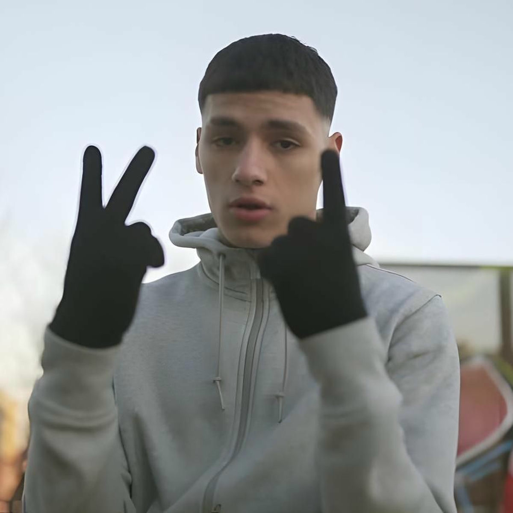
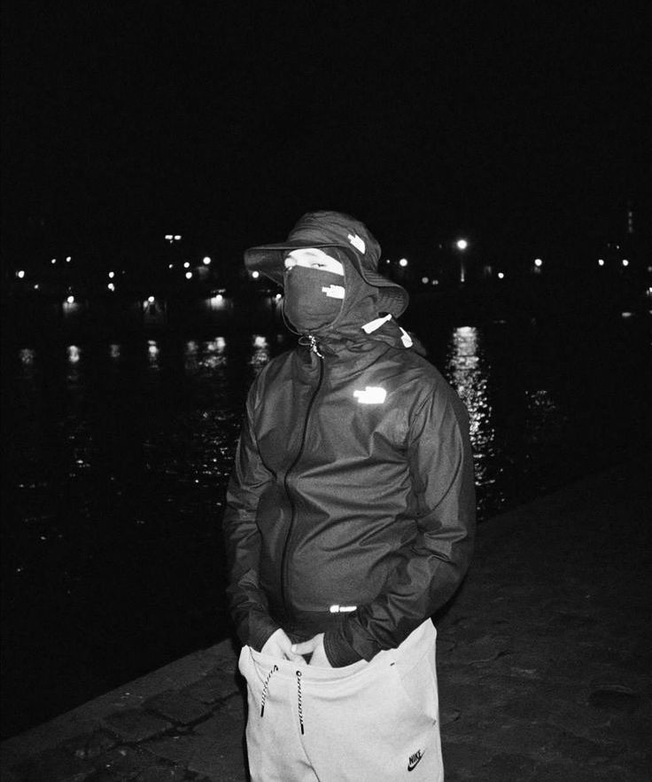
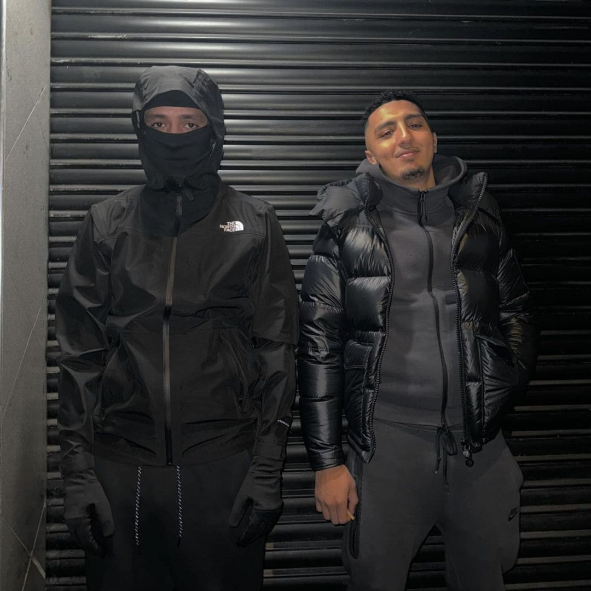
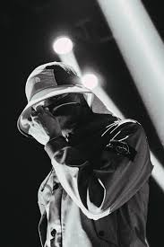

¿Quién es Beny Jr?
Beny Jr es un artista de música urbana que representa el barrio La Florida de Barcelona. Su estilo mezcla trap, drill y letras influenciadas por la vida real en la calle.
Cómo empezó en la música
Empezó escribiendo letras desde joven y creando música influenciada por su entorno. Según ha contado en entrevistas, comenzó a cantar tras salir de prisión, lo cual marcó su visión artística y personal.
Amistad con Morad
Beny Jr mantiene una fuerte relación musical y personal con Morad. Han colaborado en múltiples canciones, creando un sonido que representa el barrio y la realidad social que ambos viven.
Álbumes y música
Álbumes y discografía (selección)
| Año | Título | Formato / Notas |
|---|---|---|
| 2020 | Trap and Love | Álbum (lanzamiento digital). |
| 2021 | El Precio del Dinero | Álbum listado en discografías. |
| 2022 | Capítulo 1 (con Morad) — EP | EP colaborativo (varios temas con Morad). |
| 2023 | La Soledad Aburre Pero No Traiciona | Álbum / lanzamiento importante (listado en notas). |
| 2024 | Champions Street League | Álbum sorpresa (30 dic 2024). |
Portadas de los álbumes
Pincha en las imágenes para ver las canciones de cada álbum.
Trap and Love (2020)
3O (2020)
El Precio del Dinero (2021)

Capítulo 1 (2022)
La Soledad Aburre (2023)
Champions Street League (2024)
La máscara de Beny Jr
La máscara es parte esencial de su identidad artística. La utiliza para mantener en secreto su apariencia y preservar su vida privada.
